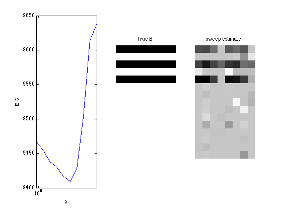
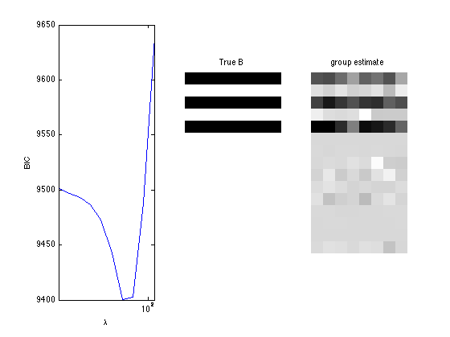
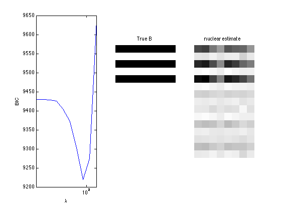

Generalized Dirichlet-Multinomial regression and sparse regression
A demo of gen. Dirichlet-Multinomial regression and sparse regression
Contents
Generate generalized Dirichlet-Multinomial random vectors from covariates
clear; % reset random seed s = RandStream('mt19937ar','Seed',1); RandStream.setGlobalStream(s); % sample size n = 500; % # covariates p = 15; % # bins d = 5; % design matrix X = randn(n,p); % true regression coefficients A = zeros(p,d-1); B = zeros(p,d-1); nzidx = [1 3 5]; A(nzidx,:) = 0.5.*ones(length(nzidx),d-1); B(nzidx,:) = 0.5.*ones(length(nzidx),d-1); alpha = exp(X*A); beta = exp(X*B); batchsize = 25+unidrnd(25,n,1); Y = gendirmnrnd(batchsize,alpha, beta);
Fit generalized Dirichlet-Multinomial regression
tic; [Bhat1,Bhat2,stats_gdm] = gendirmnreg(X,Y); toc; display(Bhat1); display(Bhat2); display(stats_gdm); display(stats_gdm.se); display(stats_gdm.wald_pvalue);
Elapsed time is 0.383854 seconds.
Bhat1 =
0.4044 0.4217 0.4496 0.3368
-0.0299 -0.0123 0.0575 -0.0418
0.3943 0.5709 0.5170 0.5504
-0.1911 0.0241 0.0455 0.0265
0.5738 0.6706 0.6396 0.4776
-0.0031 -0.0937 0.0118 -0.0098
-0.0145 0.0940 -0.0978 0.1049
0.0084 -0.1723 0.0355 -0.0211
0.0555 -0.1403 -0.0538 -0.0038
-0.0237 -0.0899 0.0175 0.0732
0.0632 0.1570 0.0418 0.1159
-0.0457 -0.0442 0.0503 0.1275
-0.0062 -0.0604 0.0016 0.0843
0.0931 0.0649 0.0346 0.1222
-0.0544 -0.1110 0.1017 0.0154
Bhat2 =
0.3881 0.3333 0.4765 0.3418
0.0041 -0.0254 0.1981 -0.1771
0.4263 0.5280 0.4249 0.5621
-0.2371 0.0633 0.1171 0.1089
0.5609 0.6077 0.6085 0.5299
-0.0288 -0.0711 -0.0084 -0.0862
0.0126 0.0797 -0.0800 0.1977
-0.0098 -0.2746 0.0930 0.0466
0.0854 -0.1082 -0.1854 -0.0037
-0.0059 -0.0076 0.0470 0.0271
0.1780 0.0620 -0.0126 0.1101
-0.0260 -0.0153 -0.0137 0.0446
-0.0083 -0.0333 0.0510 0.0935
0.0969 0.0572 0.0486 0.0835
-0.0758 -0.0748 0.2051 0.0225
stats_gdm =
gradient: [15x8 double]
se: [15x8 double]
wald_stat: [1x15 double]
wald_pvalue: [1x15 double]
H: [120x120 double]
observed_information: [120x120 double]
logL: -4.5644e+03
BIC: 9.8746e+03
AIC: 9.3689e+03
dof: 120
iterations: 19
ans =
Columns 1 through 7
0.0715 0.0839 0.1085 0.1604 0.0800 0.0908 0.1027
0.0743 0.0837 0.1015 0.1409 0.0787 0.0827 0.1074
0.0667 0.0838 0.1043 0.1407 0.0709 0.0867 0.1074
0.0676 0.0856 0.1065 0.1486 0.0701 0.0833 0.1066
0.0727 0.0925 0.1177 0.1689 0.0772 0.0908 0.1144
0.0678 0.0806 0.1059 0.1400 0.0755 0.0822 0.1011
0.0704 0.0828 0.1042 0.1437 0.0751 0.0802 0.1105
0.0730 0.0878 0.1107 0.1468 0.0790 0.0873 0.1162
0.0714 0.0854 0.1071 0.1453 0.0757 0.0847 0.1101
0.0739 0.0820 0.1113 0.1627 0.0765 0.0824 0.1082
0.0761 0.0914 0.1063 0.1411 0.0808 0.0921 0.1209
0.0722 0.0802 0.1039 0.1423 0.0769 0.0841 0.1074
0.0675 0.0745 0.0975 0.1223 0.0701 0.0820 0.1058
0.0672 0.0794 0.1019 0.1279 0.0779 0.0818 0.1078
0.0745 0.0849 0.1134 0.1527 0.0795 0.0846 0.1141
Column 8
0.1490
0.1400
0.1397
0.1437
0.1654
0.1389
0.1375
0.1461
0.1352
0.1508
0.1418
0.1367
0.1281
0.1232
0.1522
ans =
Columns 1 through 7
0.0000 0.0701 0 0.0065 0 0.7036 0.3447
Columns 8 through 14
0.0223 0.0857 0.5563 0.0319 0.5872 0.8417 0.5690
Column 15
0.2119
Fit generalized Dirichlet-Multinomial sparse regression - lasso/group/nuclear penalty
penalty = {'sweep','group','nuclear'};
ngridpt = 10;
dist = 'gendirmn';
for i = 1:length(penalty)
pen = penalty{i};
[~, stats] = mglm_sparsereg(X,Y,inf,'penalty',pen,'dist',dist);
maxlambda = stats.maxlambda;
lambdas = exp(linspace(log(maxlambda),log(maxlambda/100),ngridpt));
BICs = zeros(1,ngridpt);
tic;
for j=1:ngridpt
if j==1
B0 = zeros(p,2*(d-1));
else
B0 = B_hat;
end
[B_hat, stats] = mglm_sparsereg(X,Y,lambdas(j),'penalty',pen, ...
'dist',dist,'B0',B0);
BICs(j) = stats.BIC;
end
toc;
% True signal versus estimated signal
[bestbic,bestidx] = min(BICs);
lambdas(bestidx)
B_best = mglm_sparsereg(X,Y,lambdas(bestidx),'penalty',pen,'dist',dist);
figure;
subplot(1,3,1);
semilogx(lambdas,BICs);
ylabel('BIC');
xlabel('\lambda');
xlim([min(lambdas) max(lambdas)]);
subplot(1,3,2);
imshow(mat2gray(-[A,B])); title('True B');
subplot(1,3,3);
imshow(mat2gray(-B_best)); title([pen ' estimate']);
end
Elapsed time is 0.697428 seconds. ans = 11.4994 Elapsed time is 0.541029 seconds. ans = 29.0023 Elapsed time is 1.450908 seconds. ans = 77.4753  